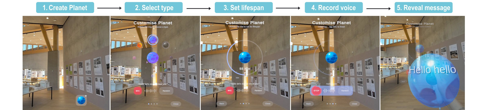
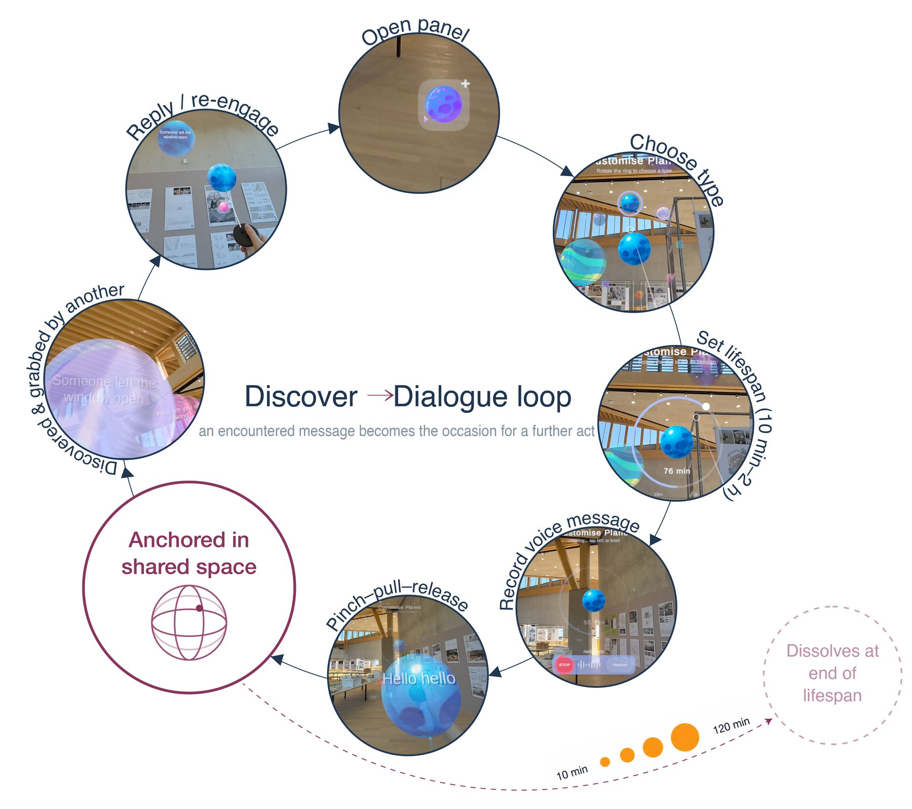
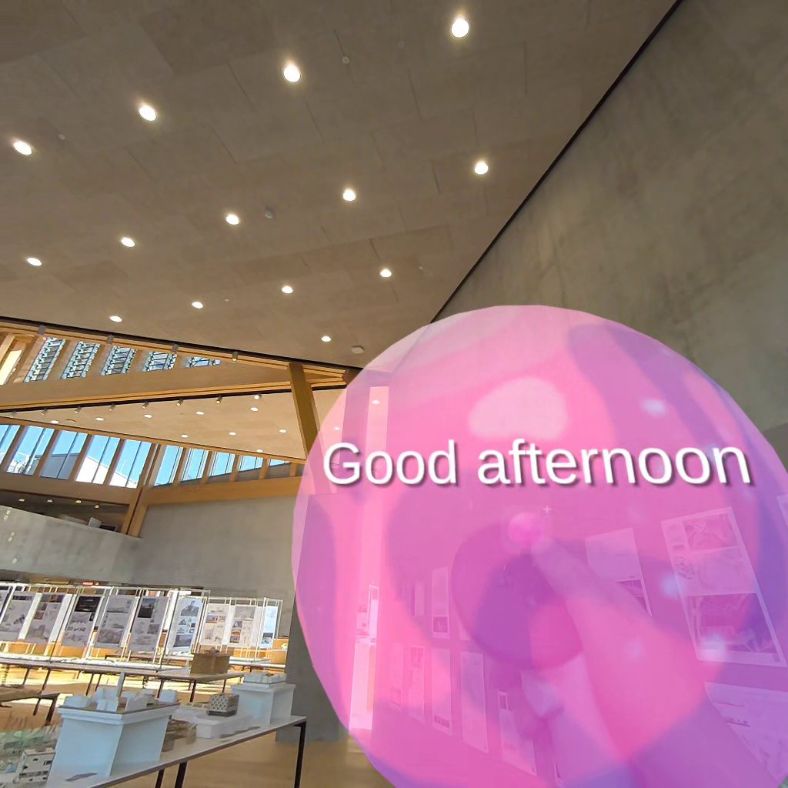
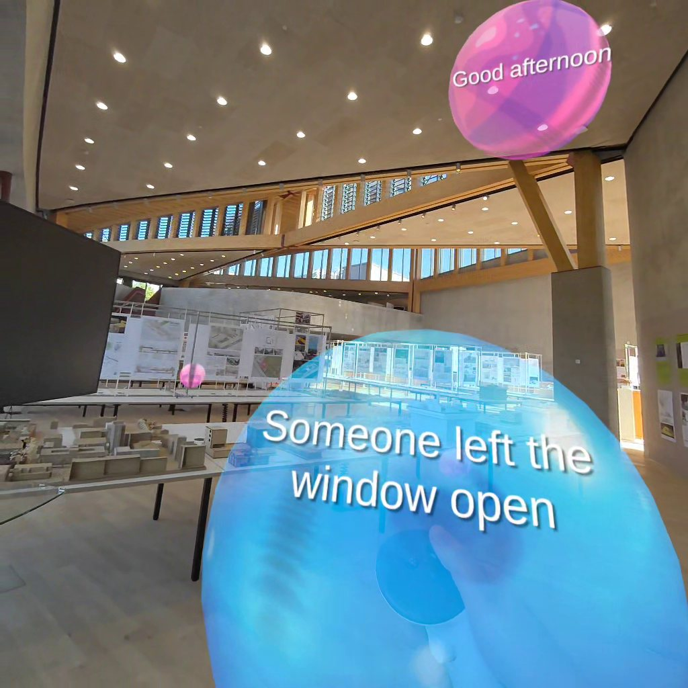
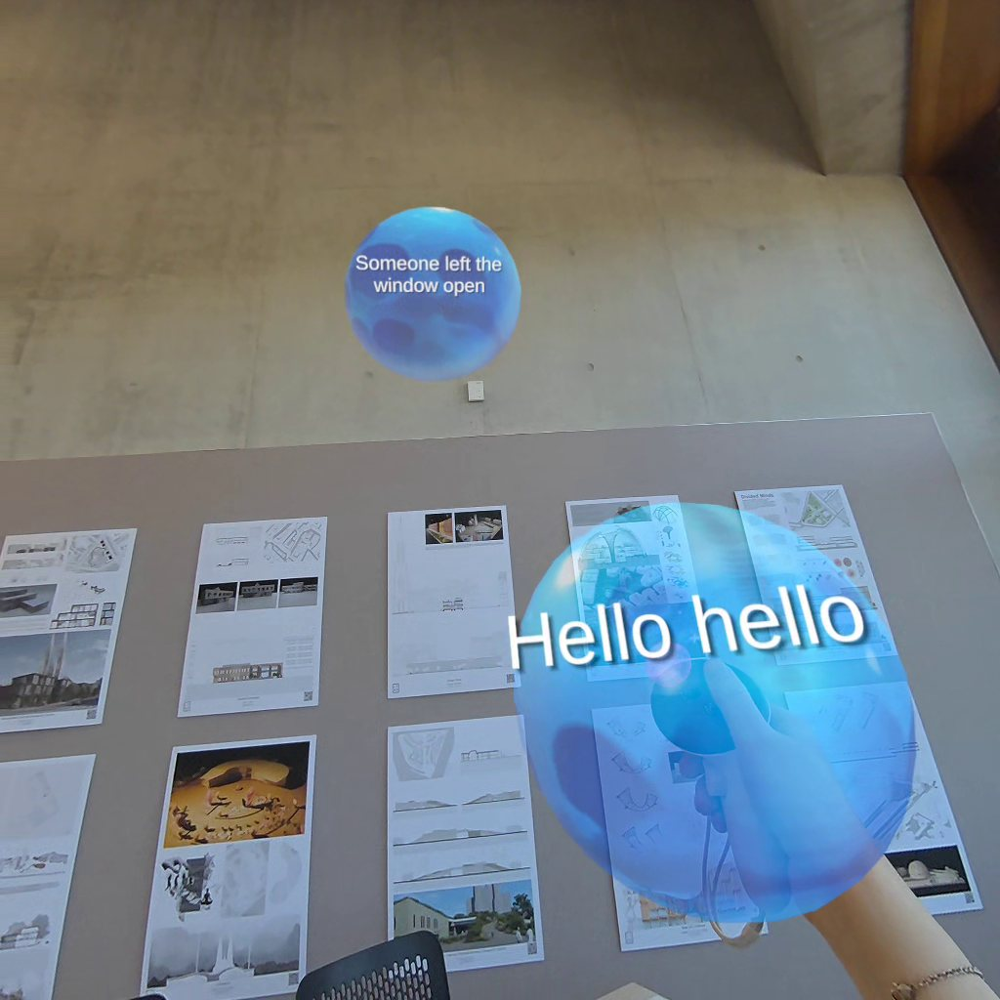
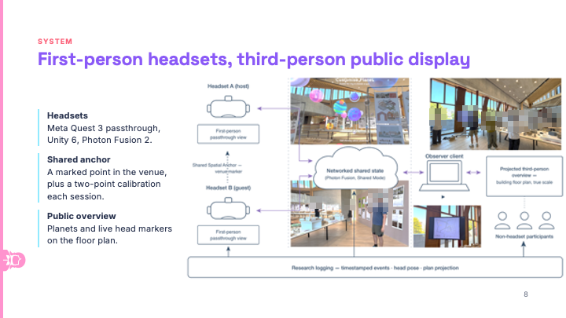
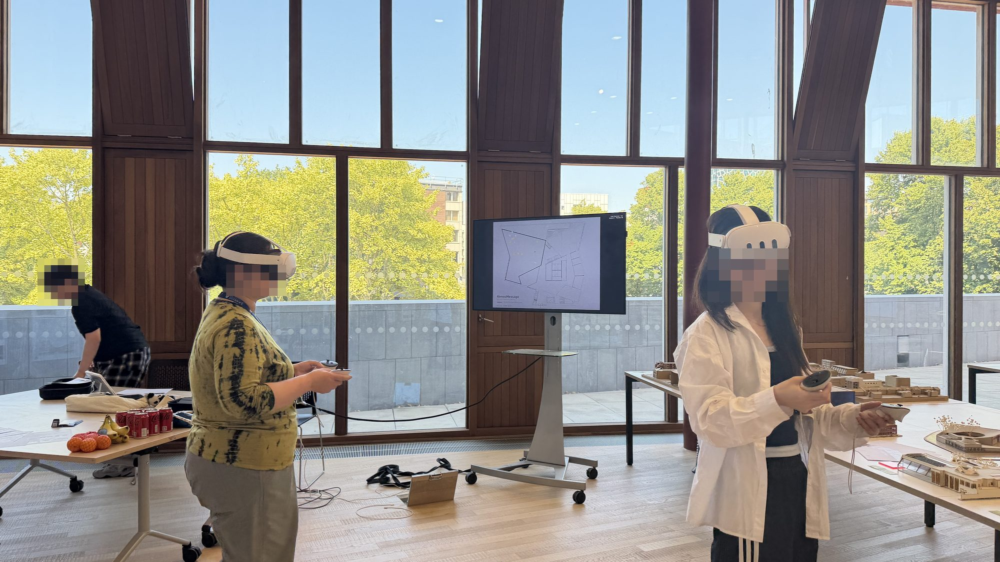
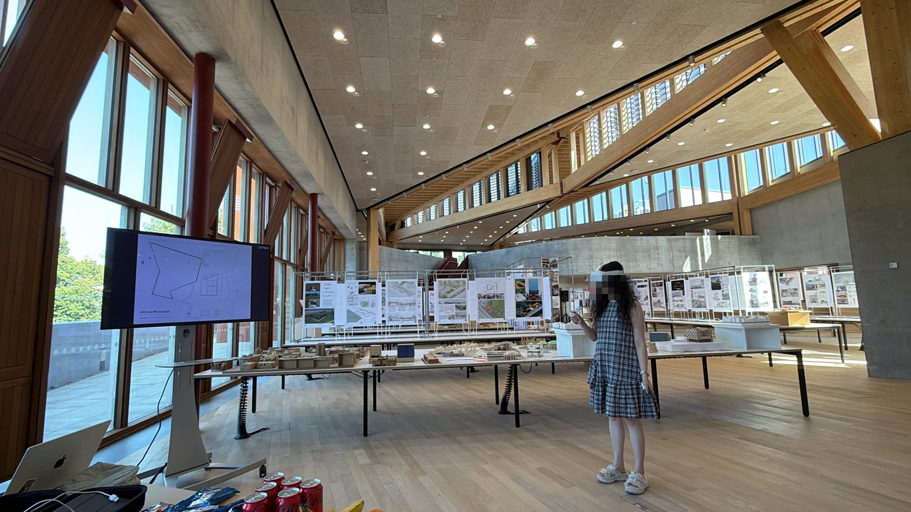
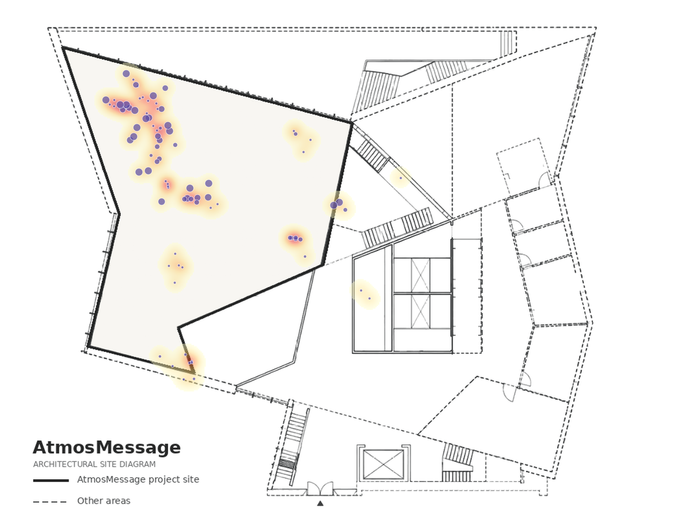
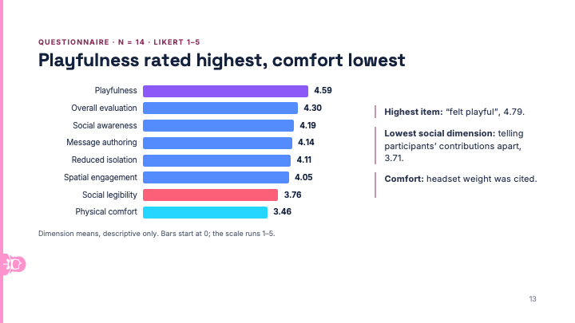

Immersive Commons
Head-mounted mixed reality usually centres the experience on one wearer, which in a shared room can pull attention away from the people standing nearby. Immersive Commons treats the architectural interior as a medium that co-located people use to talk to one another. In Atmos Messages, the system built to test the idea, one continuous gesture (pinch, pull, release) leaves a small message planet anchored in the room. It carries a voice or preset message, shrinks as its lifespan of ten minutes to two hours runs out, and can be picked up and answered by anyone else. Across two sessions, fifteen participants left 236 planets; they rated playfulness highest and headset comfort lowest.









